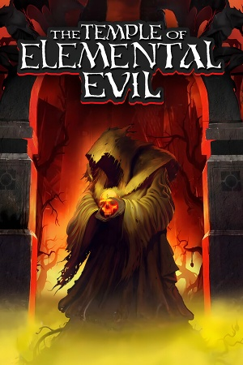

Description:
The Temple of Elemental Evil is a 2003 role-playing video game by Troika Games. It is a remake of the classic Dungeons & Dragons adventure The Temple of Elemental Evil using the 3.5 edition rules. This is the only computer role-playing game to take place in the Greyhawk campaign setting, and the first video game to implement the 3.5 edition rule set.[6] The game was published by Atari, who then held the interactive rights of the Dungeons & Dragons franchise.
